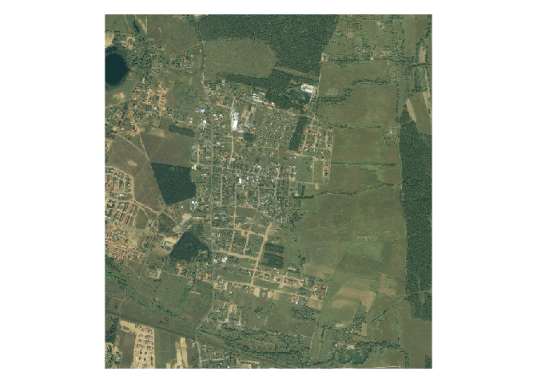
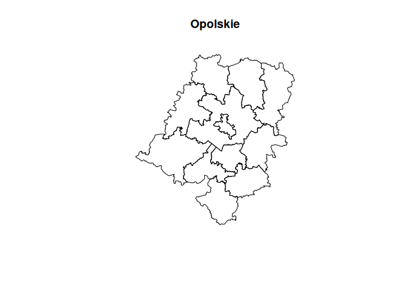

rgugik is an R package for downloading open data from resources of Polish Head Office of Geodesy and Cartography including:
- Orthophotomaps
- General Geographic Database
- Topographic Database
- Register of Towns, Streets and Addresses
- State Register of Geographical Names
- State Register of Borders
- Location (geometry) of cadastral parcels using TERYT (parcel ID) or coordinates
- 3D models of buildings (LOD1, LOD2)
- Various digital elevation models as:
It is also possible to geocode addresses or objects using the geocodePL_get() function.
Corresponding functions
| Function | Input | Dastaset EN | Dataset PL |
|---|---|---|---|
ortho_request(), tile_download()
|
geometry | Orthophotomap | Ortofotomapa |
geodb_download() |
voivodeship | General Geographic Database | Baza Danych Obiektów Ogólnogeograficznych |
topodb_download() |
county | Topographic Database | Baza Danych Obiektów Topograficznych |
emuia_download() |
commune | Register of Towns, Streets and Addresses | Ewidencja Miejscowości, Ulic i Adresów |
geonames_download() |
type | State Register of Geographical Names | Państwowy Rejestr Nazw Geograficznych |
borders_get(), borders_download()
|
type | State Register of Borders | Państwowy Rejestr Granic |
parcel_get() |
parcel ID, coordinates | Location of cadastral parcels | Lokalizacja działek katastralnych |
models3D_download() |
county | 3D models of buildings | Modele 3D budynków |
DEM_request(), tile_download()
|
geometry | Digital elevation models | Cyfrowe modele wysokościowe |
There are the additional functions for obtaining digital terrain model:
-
pointDTM_get()for small areas (high resolution grid) -
pointDTM100_download()for voivodeships areas (low resolution grid) -
minmaxDTM_get()to find the minimum and maximum elevation (small areas)
The names of administrative units and their IDs are included in these objects:
-
voivodeship_names(16) -
county_names(380) -
commune_names(2476)
Installation
You can install the released version from CRAN with:
install.packages("rgugik")You can install the development version from GitHub with:
# install.packages("remotes")
remotes::install_github("kadyb/rgugik")Usage
Orthophotomap
-
ortho_request()- returns a data frame with metadata and links to the orthoimages for a given geometry (point, line or polygon) -
tile_download()- downloads orthoimages based on the data frame obtained using theortho_request()function
library(rgugik)
library(sf)
library(stars)
polygon_path = system.file("datasets/search_area.gpkg", package = "rgugik")
polygon = read_sf(polygon_path)
req_df = ortho_request(polygon)
# select the oldest image
req_df = req_df[req_df$year == 2001, ]
# print metadata
t(req_df)
#> 12
#> sheetID "N-33-130-D-b-2-3"
#> year "2001"
#> resolution "1"
#> composition "RGB"
#> sensor "Satellite"
#> CRS "PL-1992"
#> date "2001-01-01"
#> isFilled "TRUE"
#> URL "https://opendata.geoportal.gov.pl/ortofotomapa/41/41_3756_N-33-130-D-b-2-3.tif"
#> filename "41_3756_N-33-130-D-b-2-3"
#> seriesID "41"
# download image
tile_download(req_df)
#> 1/1
img = read_stars("41_3756_N-33-130-D-b-2-3.tif")
plot(st_rgb(img), main = NULL)
Administrative boundaries
library(rgugik)
library(sf)
# get counties from opolskie voivodeship (TERYT 16)
counties = county_names
counties = counties[substr(counties$TERYT, 1, 2) == "16", "TERYT"]
counties_geom = borders_get(TERYT = counties)
plot(st_geometry(counties_geom), main = "Opolskie")
Acknowledgment
Head Office of Geodesy and Cartography in Poland is the main source of the provided data. The data is made available in accordance with the Act of May 17, 1989 Geodetic and Cartographic Law (amended on 16 April 2020).
All datasets can be explored interactively using the Geoportal.
Contribution
Contributions to this package are welcome. The preferred method of contribution is through a GitHub pull request. Feel also free to contact us by creating an issue. More detailed information can be found in the CONTRIBUTING document.
Maintainers and contributors must follow this repository’s CODE OF CONDUCT.
Citation
To cite rgugik in publications, please use the following article:
Dyba, K. and Nowosad, J. (2021). rgugik: Search and Retrieve Spatial Data from the Polish Head Office of Geodesy and Cartography in R. Journal of Open Source Software, 6(59), 2948, https://doi.org/10.21105/joss.02948BibTeX version can be obtained with citation("rgugik").
Related projects
If you don’t feel familiar with R, there is a similar QGIS tool in the EnviroSolutions repository.